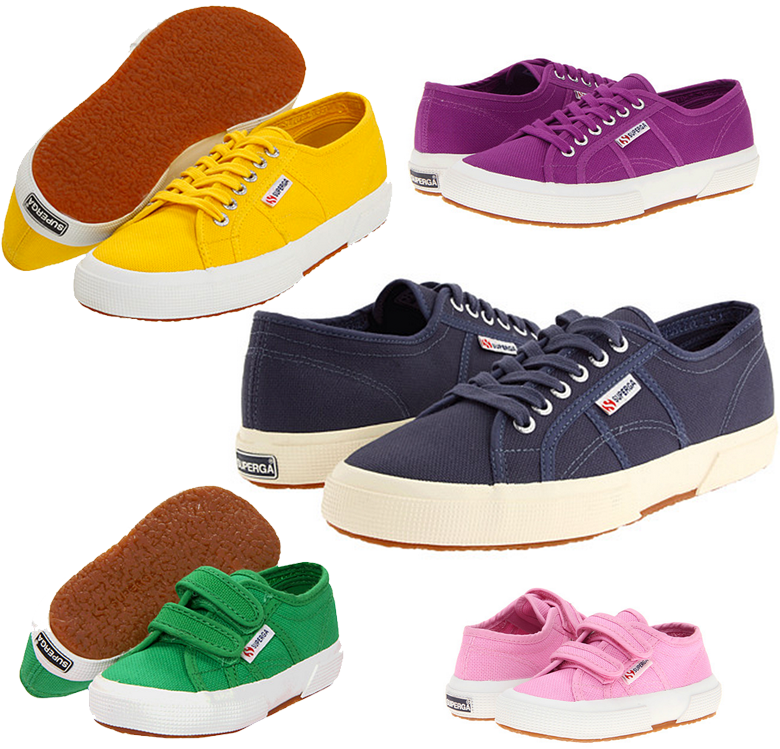
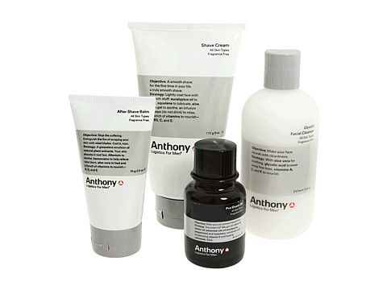

These tennis shoes are THE BOMB. Initially I had purchased these for both of my boys but then I saw that they offered them in adult sizes too and now my husband and I both wear them as well. They have arch support unlike Converse, so they are super comfy in my book. My husband also has been wearing them a ton and says they are the most comfortable tennis shoe he has aside from his workout tennis shoes. The boys shoes have held up very well, my oldest wears his to school everyday and just keep on truckin. The best part of these shoes? ALL OF THE COLORS. SO MANY COLORS.
Superga Tennis Shoes
Super Sneakers
April 22, 2013 by
For Your Guy
February 12, 2013 by

A while back I ended up with an Anthony for Men sample in my Sephora bag and I asked my husband if he wanted to try it out or throw it away. He said he’d try it. A little while after that we received a package from Amazon with some more of the Anthony for Men products and I was all oh I guess you liked that stuff huh? Turns out he loves it. So if you are looking for a last minute Valentine idea, this might be it!
Anthony For Men Logistics The Perfect Shave
However on the flip side if I get women’s shaving gel for my legs for Valentine’s Day, pissed I tell you, pissed!
Shoes I’m Living In
January 15, 2013 by

I have lots of shoes, in lots of colors. But this past year has been pretty tough so I decided at some point (probably when I was wracking my brain for what to wear one day and was absolutely run into the ground) that I needed to just buy some nice looking comfortable flats that will go with EVERYTHING and I won’t have to THINK. So without further ado…the flats/moccasins/loafers that I’ve been living in for the past year (aside from flip flops in the summer):
Vince Camuto ‘Ellen’ Flat – Caramel This one and the black flat are the exact same shoe, different color. I bought the black ones first and wore them so much because they are SO COMFORTABLE that I bought the caramel just recently.
Minnetonka Kilty Suede Moc – Brown Suede These might be the closest thing to wearing slippers outside of your house you can get. SOOOOOOO comfortable.
Vince Camuto ‘Ellen’ Flat – Black
Lacoste Women’s Concours – Tan Suede LOVE LOVE LOVE these, again..very comfortable. I couldn’t find the exact ones that I own which are tan suede, but they are this same exact style. There are some really cute ones in this same style that are out right now that are brown with a berry colored detail–super duper cute.
Cowboy Boots + Leg Warmers
December 1, 2011 by

I’m in love with this picture above, specifically the bright colored leg warmers. Â I’m also in love with cowboy boots. Â I’m thinking I need to pair up some shorty cowboy boots with some leg warmers or cuffs via etsy and some jeggings. Â What say you?

Old Gringo Nevada 10″, Zappos
Dingo Women’s Adobe Rose 7″, Langston’s
Ariat Women’s Coloma 8″ , Langston’s
Dingo Women’s Metro 7″, Langston’s
Corral Women’s Eagle Stitched Distressed Crackle Saddle Boots 10″, Langston’s
Dingo 5 Below, Zappos
Ariat Women’s Shada Cowboy Boots 9″, Langston’s
Full Blossom Boots, Sundance Catalog
Fabulous Footwear Friday!!
September 16, 2011 by

I have been on the hunt for some cute leopard print flats and ran across these. Â I can’t decide if I like the gold hardware or not. Â What say you?
Michael Kors Fulton Moc, Zappos
Fabulous Footwear Friday!!
September 2, 2011 by
This color just yells AUTUMN doesn’t it? I would love these for fall with some dark denim jeans. Â They look super comfy!
Audjie Chloe, Zappos
Fabulous Footwear Friday!!
July 22, 2011 by

I’ve been on a workout kick more than normal lately and my running shoes were just about 2 years old, so I thought it might be time to get some new ones. Â I’m a huge fan of Nike running shoes and when I saw these babies with the polka dots, SOLD!
Nike Lunarswift +2, Zappos
Fabulous Footwear Friday!!
July 15, 2011 by

I am picturing these with a long maxi dress, probably black so that the GREEN shoes will pop. Â Add a green necklace or earrings or bracelets and bam you are dressed for summer!
Michael Kors Willow, Zappos
Fabulous Footwear Friday
April 29, 2011 by
I love Reef flip flops, they are super duper comfy! Â As I was browsing the other day I ran across these beauties that are adorable but there is more to it….
The beads on the t-strap are handcrafted by displaced women in Uganda and are made of 100% recycled paper.Part of the Reef Redemption series. Reef incorporates renewable, recycled, and/or organic materials wherever possible – and all without compromising their signature fit, quality, comfort, or style. 1% of all proceeds from the Reef Redemption product series will benefit various environmental and humanitarian causes globally.
Gotta love that! Â Looking cute and helping out!
Reef Ugandal 3, Zappos
Huarache Love
March 9, 2011 by
Der was wearing some sandals the other day that I fell in LOVE LOVE LOVE with, but alas they aren’t available anymore…at least they aren’t online anymore and I didn’t see them at my local Target. Â All of these are very reminiscent of Der’s, yet don’t have the price tag I’m really longing for.
- BC Footwear Ciao Bella, Endless
- Born Huarache Thongs, Garnet Hill (of course my fav, I’ll take these in brown metallic please)
- Frye Zoe Huarache Thong, Zappos (this comes in a TON of different colors)
- Reef Reefachi, Zappos
- Indigo Gull Pond Cork Wedge Sandals, Garnet Hill


Recent Comments